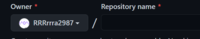

まずは、基本的なところからやっていこう！
今回は、「リポジトリ」の作り方についてです！
～リポジトリとは～
リポジトリとは、githubのファイルが置いてある場所、すなわち「倉庫」のことです。githubでは、このリポジトリ中にファイルを書き込んでいきます。
～リポジトリの作り方～
ここの右上にある、+ボタンを押して、「New repository」というところをクリック
そして、

ここにリポジトリの名前を入力しましょう！
ここの「Add a README file」ってところにチェックをつけましょう！
そして、「Create repository」というところをクリックすれば、リポジトリの完成です！
今回はこれで終わります！次回は「ファイルを作ってみよう」です！
(ﾟ∀ﾟ)ﾏﾀﾈ
ホームに戻る
目次へ戻る